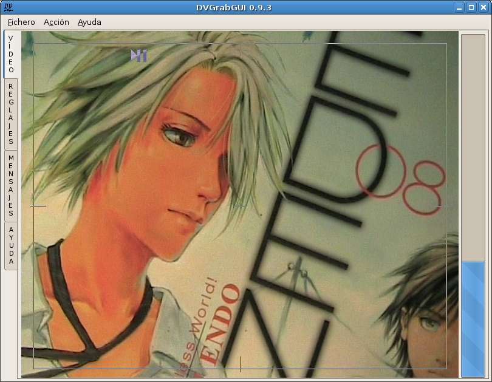

Pre: Referencias → Ventana Vídeo --- ↑Home --- Sig: Referencias → Reglajes → Captura
DVGrabGUI 0.9.4
Referencias → Ventana Vídeo (modalidad "pequeña")
Esta modalidad de interfaz ha sido escrita para ser utilizado con una pequeña
pantalla táctil de definición 800×600, ¡entonces la ventana principal muestra
casi sólo la vídeo dv!

-
Los cuatro uñeros mayores
Como lo puede ver, en modalidad "pequeña", la ventana mayor pierde su
barra de estatuto, y los uñeros están en el lado de izquierda.
La ventana "vídeo" también pierde la mayoría de sus controles, sólo
guarda el indicador de espacio de disco…
-
La ventana "Vídeo" "pequeña"
-
Visualización Vídeo
Esta ventana le muestra el flujo dv cuando el thread de captura está
encendido.
Le permite encender/parar el thread de captura (izquierda-clic en la
parte izquierda de la ventana), y…
Le permite encender/parar la grabación (izquierda-clic en la parte
derecha de la ventana).
-
Espacio de disco
Esta zona le da informaciones sobre el espacio de disco total/restante
(para el punto de montaje (???) del directorio donde registra sus
ficheros vídeo grabados).
Pre: Referencias → Ventana Vídeo --- ↑Home --- Sig: Referencias → Reglajes → Captura
(c) 2006, 2007, 2008 Bastien Montagne (montagne29 en wanadoo punto fr).
Proyecto albergado en sourceforge.net/projects/dvgrabgui.